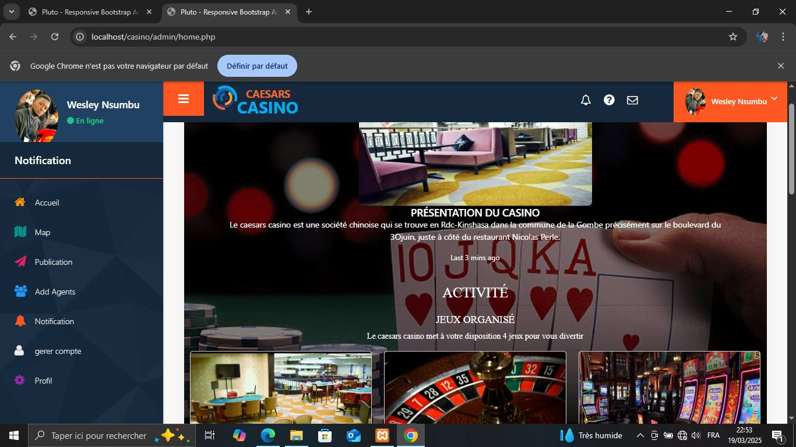
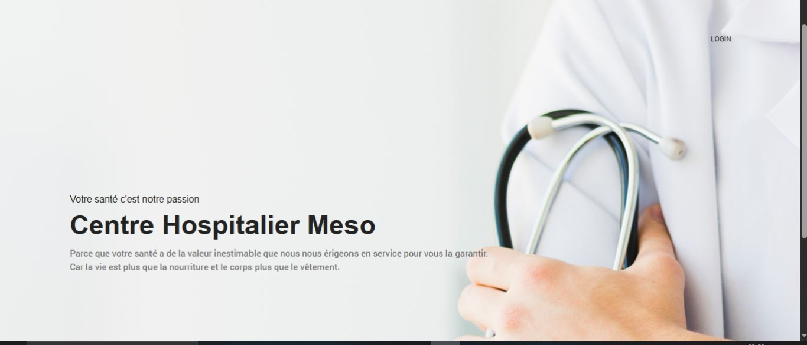
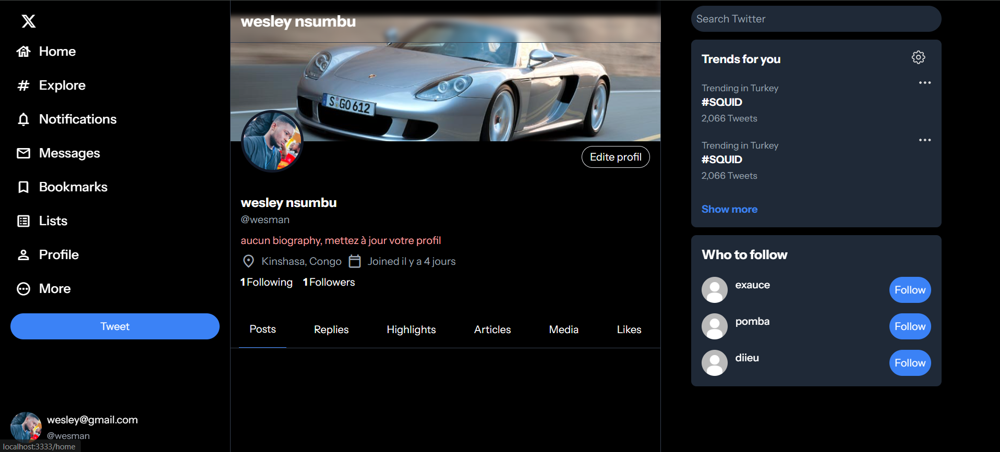
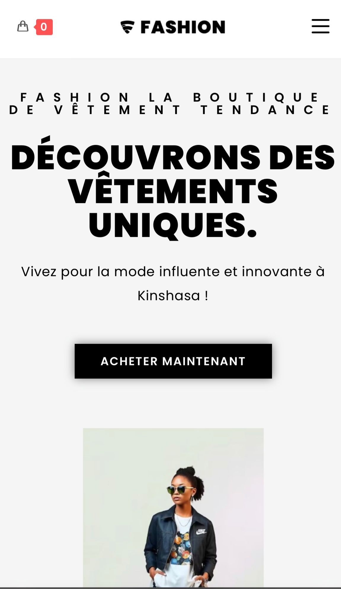
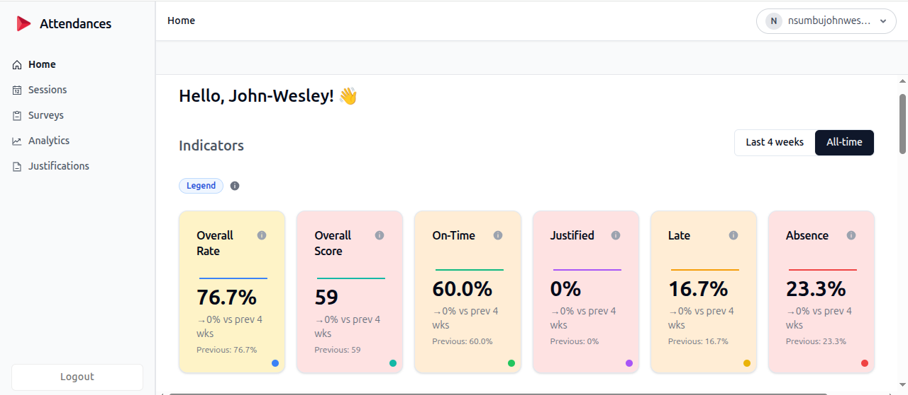
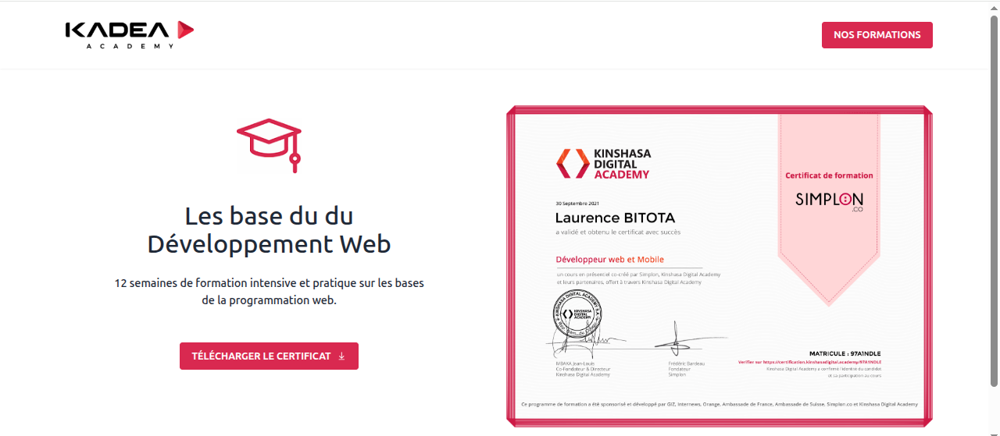

Hello, je suis Wesley Nsumbu
un développeur web passionné doté d'une créativité débordante et d'un talent pour concrétiser les idées en expériences numériques interactives.
ProjetsÀ PROPOS DE MOI
Vous trouverez ici plus d'informations sur moi, ce que je fais et mes compétences actuelles, principalement en termes de programmation et de technologie.
Faisons connaissance !
Je suis un Développeur Full Stack, passionné par la création d'applications web et mobiles complètes. Mon expertise couvre l'ensemble du processus de développement, des interfaces utilisateur dynamiques aux architectures backend robustes, en passant par la gestion des bases de données.
Mes compétences
Projets
Vous trouverez ici quelques-uns des projets personnels et clients que j'ai créés, chaque projet contenant sa propre étude de cas.

Caesars Casino
Caesars Casino est une application de présentation interactive que j’ai réalisée dans le cadre de mon travail de fin d’étude, mettant en valeur l’univers, les services et les espaces de loisirs du casino à travers une interface moderne et immersive.
Case Study
CHM
CHM est une application que j’ai conçue et développée pour répondre aux besoins spécifiques d’un centre hospitalier. Elle permet la gestion complète des patients, des dossiers médicaux, des consultations, ainsi que la planification des rendez-vous et le suivi du personnel médical.
Case Study
Clone X
Dans le cadre de mon projet de chef-d’œuvre à la fin de ma formation à la KADEA, j’ai réalisé une application complète inspirée du réseau social X (anciennement Twitter). Ce projet m’a permis de mettre en pratique l’ensemble des compétences acquises tout au long de mon parcours, notamment en développement web et mobile fullstack.
Case Study
Fashion Boutique
Fashion Boutique est un site e-commerce que j’ai conçu durant ma formation à la KADEA, entièrement dédié à la vente de vêtements et accessoires de mode. J’ai travaillé sur le design responsive, l’intégration du catalogue produit, ainsi que la gestion du panier et des utilisateurs, en utilisant des technologies modernes pour offrir une expérience fluide et élégante.
Case Study
Attendance
J'ai assuré la gestion complète du site attendance.kadea.academy, une plateforme de suivi des présences pour la KADEA Academy. Mes responsabilités incluaient la maintenance et les mises à jour régulières du site, ainsi que la configuration d'un système d'envoi automatique de mails pour notifier les utilisateurs et optimiser la communication.
Case Study
Certification Platform
J'ai contribué au développement de certification.kinshasadigital.academy, en prenant en charge la partie Front-end et l'implémentation de la génération automatique de certificats à partir des données utilisateurs. J'ai également développé un système d'import de données depuis des fichiers CSV et participé à la modélisation et conception de la base de données pour garantir une structure robuste et évolutive.
Case Study